🏭 Conociendo la máquina
Vista general, componentes, ejes X/Y/Z, husillo, mesa y cambiador.
Esta guía te lleva paso a paso para conocer una fresadora CNC DATAN ME500 con control SINUMERIK 808D Milling. Aprende primero, practica después y ejecuta solamente cuando hayas comprendido cada procedimiento.
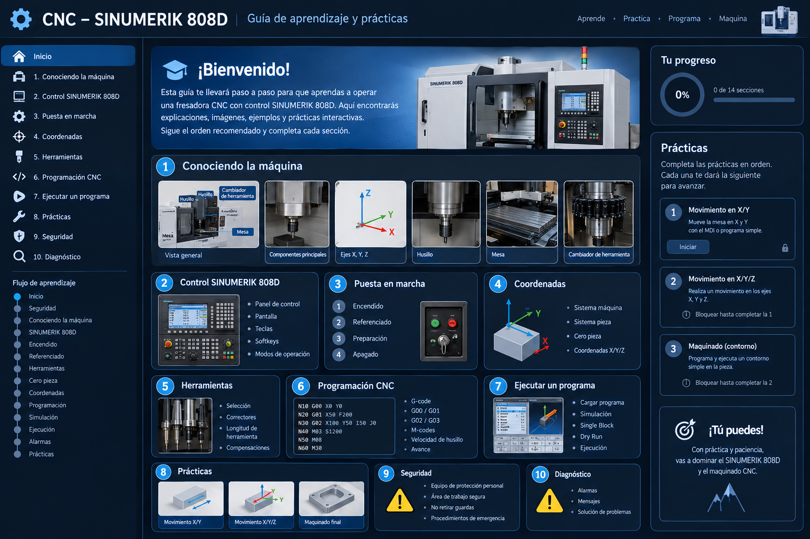
Completa los temas en orden para construir una base sólida antes de maquinar.
Vista general, componentes, ejes X/Y/Z, husillo, mesa y cambiador.
Panel, pantalla, teclas, softkeys y modos de operación.
Encendido, referenciado, preparación y apagado.
Sistema máquina, sistema pieza, cero pieza y X/Y/Z.
Selección, correctores, longitud y compensaciones.
G-code, G00/G01, G02/G03, M-codes, RPM y avance.
Cargar, simular, Single Block, Dry Run y ejecución.
Movimiento X/Y, movimiento X/Y/Z y maquinado final.
EPP, área de trabajo, paro de emergencia y buenas prácticas.
Alarmas, mensajes y solución ordenada de problemas.
La secuencia está pensada para que primero entiendas la máquina y después pases a movimientos y programación.
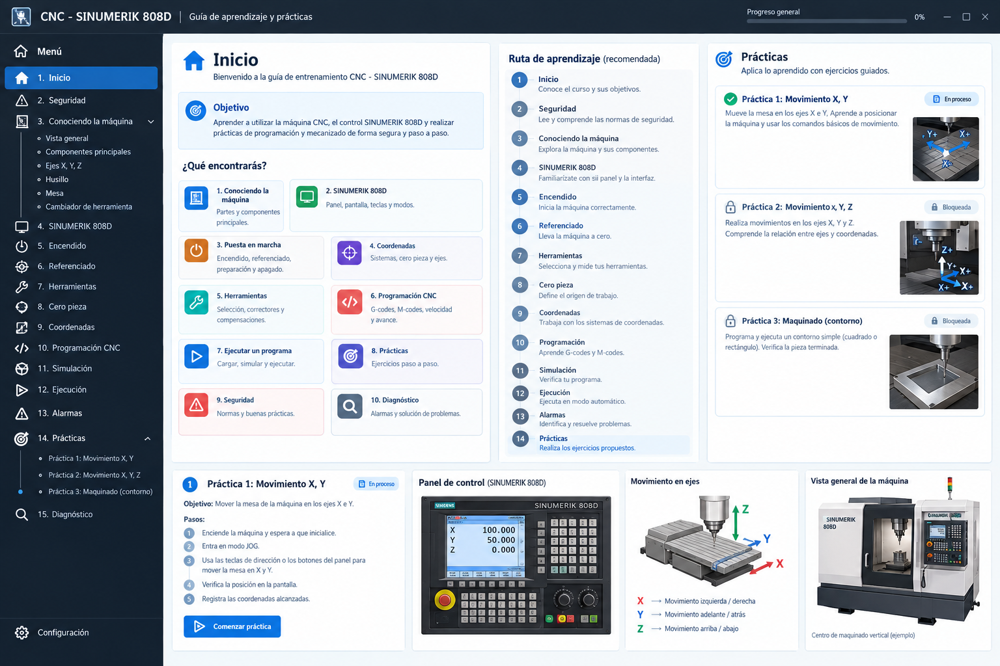
La seguridad es el punto de partida antes de cualquier movimiento.
Este manual es educativo y no sustituye la capacitación del laboratorio, el manual del fabricante ni las instrucciones del responsable de la máquina. No ejecutes movimientos o programas reales únicamente con esta página.
Primero elimina riesgos: EPP, guardas, área libre y paro de emergencia identificado.
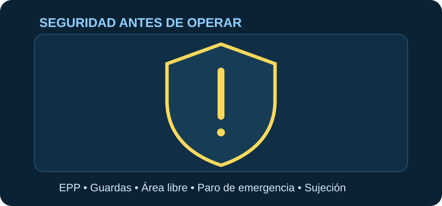
Identifica físicamente cada parte antes de aprender a moverla.
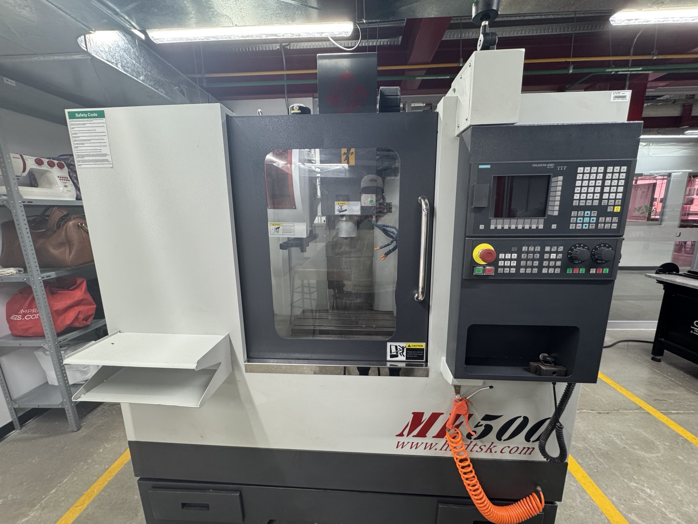
La DATAN ME500 es una fresadora CNC de tres ejes como referencia didáctica. La fotografía real de tu equipo se conserva como base visual.
X: izquierda/derecha. Y: adelante/atrás. Z: arriba/abajo del conjunto de herramienta, según la configuración mostrada.
Gira la herramienta de corte. Su velocidad se expresa normalmente en revoluciones por minuto (RPM).
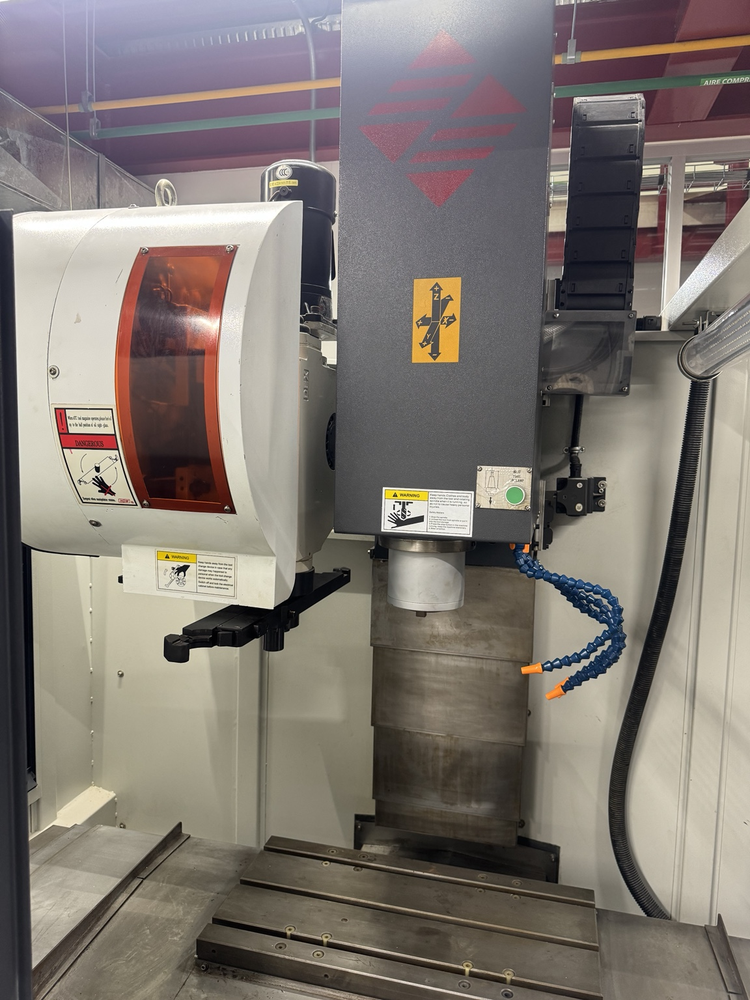
Superficie donde se fija la pieza. En la placa fotografiada se identifica una mesa de 600 × 300 mm.
Permite seleccionar diferentes herramientas cuando el equipo y el programa lo requieren. En prácticas reales sigue el procedimiento específico del laboratorio.
Aprende qué hace cada zona del panel antes de usar comandos.
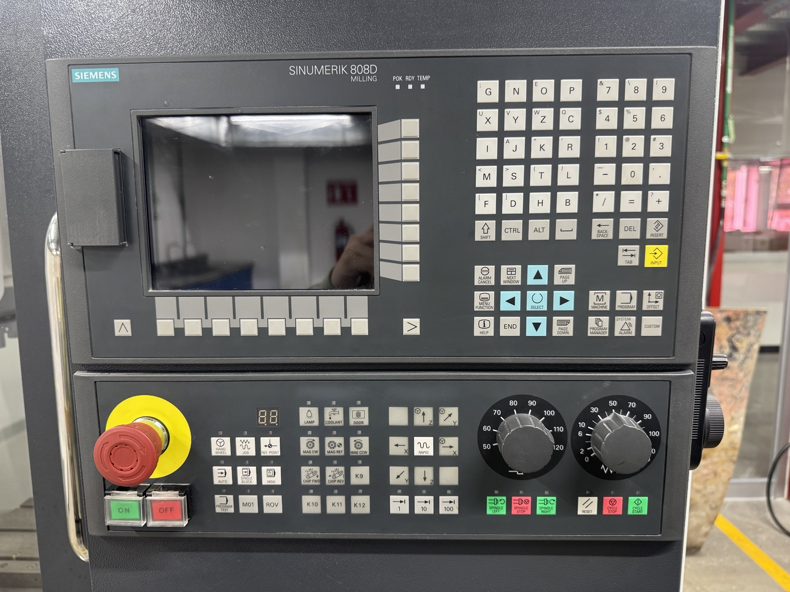
Muestra coordenadas, programas, estados, alarmas y menús.
Permiten introducir datos, navegar y seleccionar funciones.
Las funciones cambian según la pantalla o menú activo.
Para fines didácticos distingue entre JOG/manual, edición, simulación y ejecución según la configuración disponible.
Procedimiento conceptual: siempre sigue el procedimiento real de tu laboratorio.
Usa esta imagen como recordatorio de la secuencia conceptual antes de entrar al simulador.
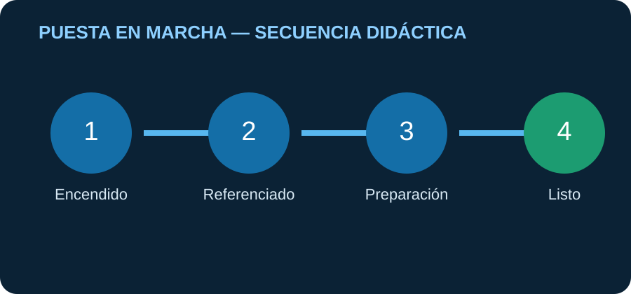
Comprueba el área y activa la máquina siguiendo la secuencia autorizada.
Lleva los ejes a su referencia cuando el procedimiento de la máquina lo requiera.
Comprueba herramienta, pieza, cero pieza, programa y parámetros.
Finaliza el ciclo, deja el área segura y apaga según el procedimiento indicado.
Comprende la diferencia entre máquina, pieza y posición de trabajo.
Relaciona el origen, las direcciones y el cero pieza antes de practicar.
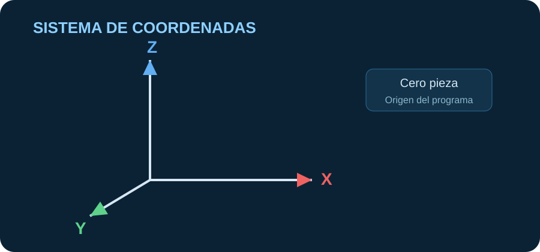
Referencia propia de la máquina. Sirve para establecer posiciones y referencias del equipo.
Referencia que se utiliza para programar el mecanizado respecto a la pieza.
Punto elegido como origen del programa. Su selección debe ser clara y repetible.
Cada eje representa una dirección. Los signos dependen de la orientación y configuración de la máquina.
Si quieres mover la herramienta hacia arriba en el eje vertical mostrado en este manual, ¿qué eje estudiarías primero?
La herramienta y sus correctores determinan cómo interpreta el control la geometría real.
La longitud y la compensación son datos que el control utiliza para interpretar la herramienta real.
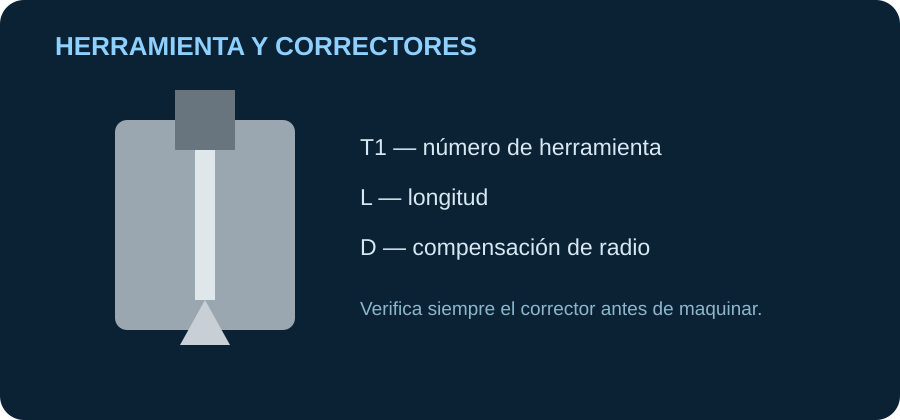
Identifica el número de herramienta y verifica que sea la herramienta prevista para la operación.
Los correctores compensan diferencias entre la herramienta nominal y la herramienta real.
El control necesita conocer la longitud efectiva de la herramienta para posicionar el eje Z correctamente.
Dependiendo de la operación pueden existir compensaciones de longitud y de radio. Valida siempre la sintaxis y el procedimiento del 808D instalado.
Aprende primero el significado de cada comando; después practica con trayectorias sencillas.
Cada bloque produce una instrucción que el control convierte en movimiento.
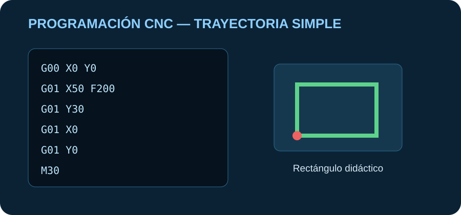
N10 G00 X0 Y0
N20 G01 X50 Y0 F200
N30 G01 X50 Y30
N40 G01 X0 Y30
N50 G01 X0 Y0
N60 M30Ejemplo conceptual de una trayectoria rectangular. No lo ejecutes directamente en una máquina sin revisar origen, herramienta, alturas, avances, límites y procedimiento de seguridad.
Movimiento rápido.
Movimiento lineal con avance.
Interpolación circular.
M03/M05, M30 y otras funciones auxiliares según la configuración.
Velocidad de giro del husillo.
Avance programado.
La simulación y la revisión reducen errores antes de una ejecución real.
La ruta segura es revisar, simular y comprobar antes de permitir el corte.
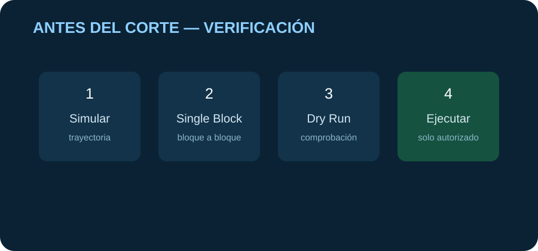
Selecciona o crea el programa de acuerdo con el procedimiento autorizado.
Revisa trayectoria, orden de bloques y posibles colisiones.
Ejecuta bloque por bloque durante la comprobación inicial.
Usa el modo disponible para verificar la trayectoria sin realizar el corte normal.
Solo después de la autorización y comprobaciones correspondientes.
Aprende como si estuvieras frente al panel: una acción sencilla por vez.
Primero mueve X/Y, después X/Y/Z y al final ejecuta un maquinado guiado. No necesitas escribir G-code para completar los dos primeros retos.
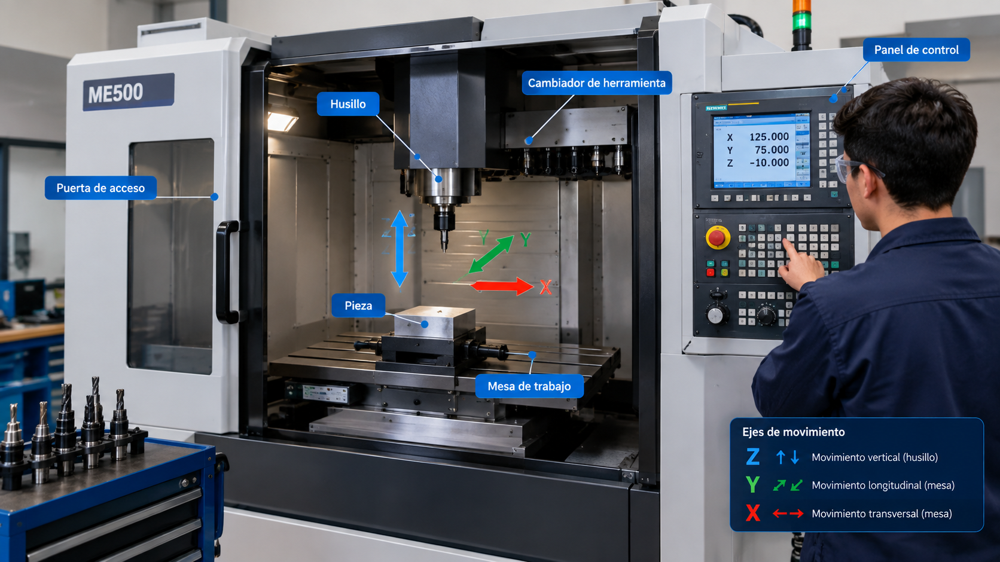
Mueve la herramienta en dos ejes y observa el cambio en el DRO.
Añade el eje Z y comprueba cómo cambia la posición de la herramienta.
Observa una trayectoria rectangular y ejecuta el ciclo guiado hasta terminar.
Ante un problema, primero identifica qué informa el control y después actúa.
No borres una alarma sin entenderla: identifica el mensaje, busca la causa y actúa de forma segura.
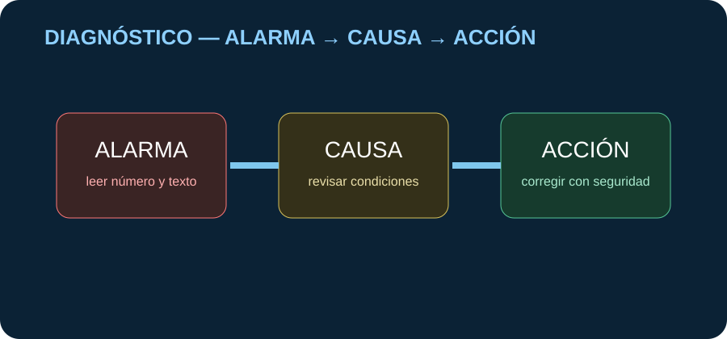
Registra el número y texto de la alarma. No borres el mensaje sin comprender qué lo provocó.
Distingue entre una alarma, un aviso y una condición que impide ejecutar el ciclo.
Información visible en la placa fotografiada de tu equipo.